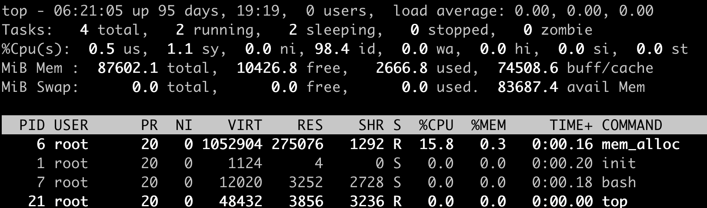
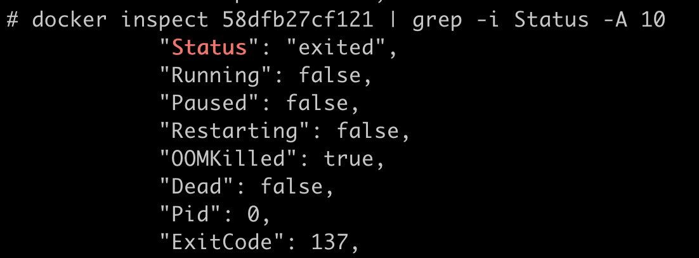
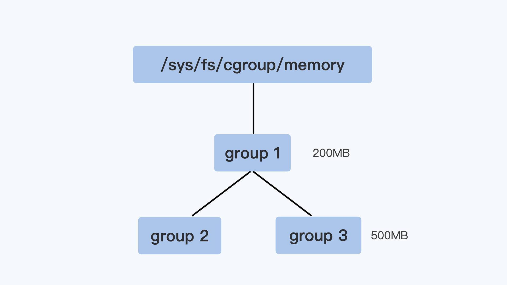
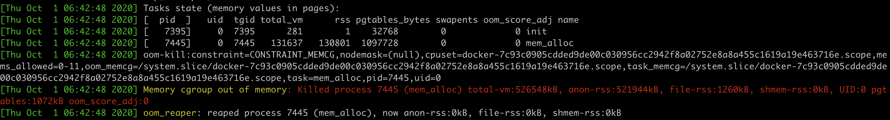
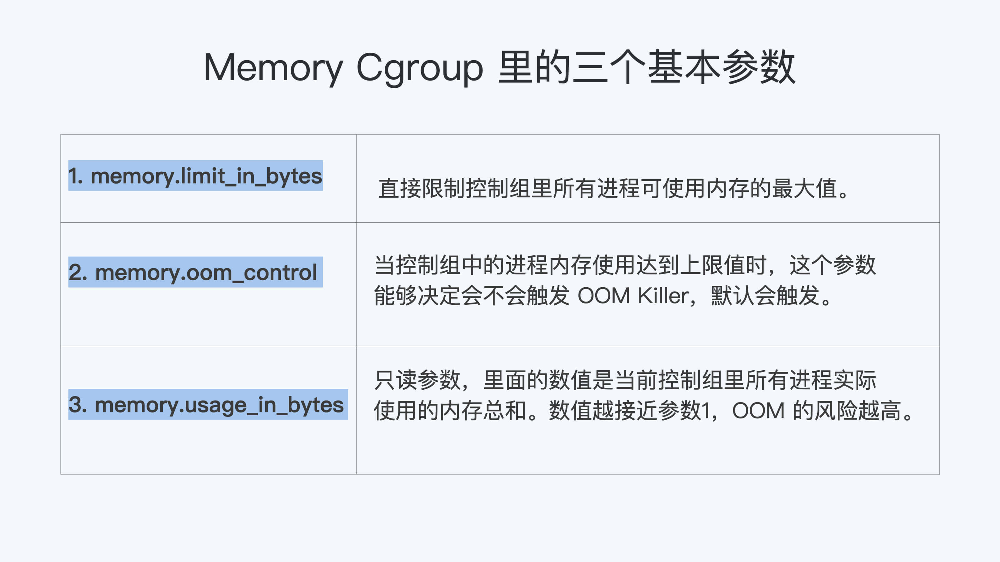

Memory Cgroup
在使用容器的时候，一定会伴随着Memory Cgroup。而Memory Cgroup给Linux原本就复杂的内存管理带来了新的变化。
不知道你在使用容器时，有没有过这样的经历？一个容器在系统中运行一段时间后，突然消失了，看看自己程序的log文件，也没发现什么错误，不像是自己程序Crash，但是容器就是消失了。
问题再现
容器在系统中被杀掉，其实只有一种情况，那就是容器中的进程使用了太多的内存。具体来说，就是容器里所有进程使用的内存量，超过了容器所在Memory Cgroup里的内存限制。这时Linux系统就会主动杀死容器中的一个进程，往往这会导致整个容器的退出。
我们可以做个简单的容器，模拟一下这种容器被杀死的场景。做容器的Dockerfile和代码，你可以从 这里 获得。
接下来，我们用下面的这个脚本来启动容器，我们先把这个容器的Cgroup内存上限设置为512MB（536870912 bytes）。
#!/bin/bash
docker stop mem_alloc;docker rm mem_alloc
docker run -d --name mem_alloc registry/mem_alloc:v1
sleep 2
CONTAINER_ID=$(sudo docker ps --format "{{.ID}}\\t{{.Names}}" | grep -i mem_alloc | awk '{print $1}')
echo $CONTAINER_ID
CGROUP_CONTAINER_PATH=$(find /sys/fs/cgroup/memory/ -name "*$CONTAINER_ID*")
echo $CGROUP_CONTAINER_PATH
echo 536870912 > $CGROUP_CONTAINER_PATH/memory.limit_in_bytes
cat $CGROUP_CONTAINER_PATH/memory.limit_in_bytes
容器启动后，里面有一个小程序mem_alloc会不断地申请内存。当它申请的内存超过512MB的时候，你就会发现，我们启动的这个容器消失了。

这时候，如果我们运行 docker inspect 命令查看容器退出的原因，就会看到容器处于"exited"状态，并且"OOMKilled"是true。

那么问题来了，什么是OOM Killed呢？它和之前我们对容器Memory Cgroup做的设置有什么关系，又是怎么引起容器退出的？想搞清楚这些问题，我们就需要先理清楚基本概念。
如何理解OOM Killer？
我们先来看一看OOM Killer是什么意思。
OOM是Out of Memory的缩写，顾名思义就是内存不足的意思，而Killer在这里指需要杀死某个进程。那么OOM Killer就是 在Linux系统里如果内存不足时，就需要杀死一个正在运行的进程来释放一些内存。
那么Linux里的程序都是调用malloc()来申请内存，如果内存不足，直接malloc()返回失败就可以，为什么还要去杀死正在运行的进程呢？
其实，这个和Linux进程的内存申请策略有关，Linux允许进程在申请内存的时候是overcommit的，这是什么意思呢？就是说允许进程申请超过实际物理内存上限的内存。
举个例子，节点上的空闲物理内存只有512MB了，但是如果一个进程调用malloc()申请了600MB，那么malloc()的这次申请还是被允许的。因为malloc()申请的是内存的虚拟地址，系统只是给了程序一个地址范围，由于没有写入数据，所以程序并没有得到真正的物理内存。物理内存只有程序真的往这个地址写入数据的时候，才会分配给程序。
可以看得出来，这种overcommit的内存申请模式可以带来一个好处，它可以有效提高系统的内存利用率。不过这也带来了一个问题，也许你已经猜到了，就是物理内存真的不够了，又该怎么办呢？
就像航空公司卖飞机票的时候往往是超售的。比如说实际上有100个位子，航空公司会卖105张机票，在登机的时候如果实际登机的乘客超过了100个，那么就需要按照一定规则，不允许多出的几位乘客登机了。
同样的道理，遇到内存不够的这种情况，Linux采取的措施就是杀死某个正在运行的进程。
那么你一定会问了，在发生OOM的时候，Linux到底是根据什么标准来选择被杀的进程呢？这就要提到一个在Linux内核里有一个 oom_badness()函数，就是它定义了选择进程的标准。其实这里的判断标准也很简单，函数中涉及两个条件：
第一，进程已经使用的物理内存页面数。
第二，每个进程的OOM校准值oom_score_adj。在/proc文件系统中，每个进程都有一个 /proc/<pid>/oom_score_adj 的接口文件。我们可以在这个文件中输入-1000 到1000之间的任意一个数值，调整进程被OOM Kill的几率。
adj = (long)p->signal->oom_score_adj;
points = get_mm_rss(p->mm) + get_mm_counter(p->mm, MM_SWAPENTS) +mm_pgtables_bytes(p->mm) / PAGE_SIZE;
adj *= totalpages / 1000;
points += adj;
结合前面说的两个条件，函数oom_badness()里的最终计算方法是这样的：
用系统总的可用页面数，去乘以OOM校准值oom_score_adj，再加上进程已经使用的物理页面数，计算出来的值越大，那么这个进程被OOM Kill的几率也就越大。
OOM优先级机制:
- linux会为每个进程算一个分数，最终他会将分数最高的进程kill。
/proc/PID/oom_score_adj#范围为-1000到1000，值越高越容易被宿主机kill掉，如果将该值设置为-1000，则进程永远不会被宿主机kernel kill。/proc/PID/oom_adj#范围为-17到+15，取值越高越容易被干掉，如果是-17，则表示不能被kill，该设置参数的存在是为了和旧版本的Linux内核兼容。/proc/PID/oom_score#这个值是系统综合进程的内存消耗量、CPU时间(utime + stime)、存活时间(uptime - start time)和oom_adj计算出的进程得分，消耗内存越多得分越高，越容易被宿主机kernel强制杀死。
Docker 可以强制执行硬性内存限制，即只允许容器使用给定的内存大小。
- Docker 也可以执行非硬性内存限制，即容器可以使用尽可能多的内存，除非内核检测到主机上的内存不够用了。
- 大部分的选项取正整数，跟着一个后缀b，k， m，g，，表示字节，千字节，兆字节或千兆字节。
- Most of these options take a positive integer, followed by a suffix of b, k, m, g, to indicate bytes, kilobytes, megabytes, or gigabytes.
- oom-score-adj #宿主机kernel对进程使用的内存进行评分，评分最高的将被宿主机内核kill掉(越低越不容易被kill)，可以指定一个容器的评分为较低的负数，但是不推荐手动指定。
- oom-kill-disable #对某个容器关闭oom机制。
如何理解Memory Cgroup？
Memory Cgroup 也是 Linux Cgroups 子系统之一，它的作用是对一组进程的Memory使用做限制。Memory Cgroup 的虚拟文件系统的挂载点一般在"/sys/fs/cgroup/memory"这个目录下，这个和 CPU Cgroup 类似。我们可以在 Memory Cgroup 的挂载点目录下，创建一个子目录作为控制组。
每一个控制组下面有不少参数，在这一讲里，这里我们只讲跟OOM最相关的3个参数： memory.limit_in_bytes，memory.oom_control和memory.usage_in_bytes。其他参数如果你有兴趣了解，可以参考内核的 文档说明。
首先我们来看第一个参数，叫作memory.limit_in_bytes。请你注意，这个memory.limit_in_bytes是每个控制组里最重要的一个参数了。这是因为一个控制组里所有进程可使用内存的最大值，就是由这个参数的值来直接限制的。
那么一旦达到了最大值，在这个控制组里的进程会发生什么呢？
这就涉及到我要给你讲的第二个参数memory.oom_control了。这个memory.oom_control又是干啥的呢？当控制组中的进程内存使用达到上限值时，这个参数能够决定会不会触发OOM Killer。
如果没有人为设置的话，memory.oom_control的缺省值就会触发OOM Killer。这是一个控制组内的OOM Killer，和整个系统的OOM Killer的功能差不多，差别只是被杀进程的选择范围：控制组内的OOM Killer当然只能杀死控制组内的进程，而不能选节点上的其他进程。
如果我们要改变缺省值，也就是不希望触发OOM Killer，只要执行 echo 1 > memory.oom_control 就行了，这时候即使控制组里所有进程使用的内存达到memory.limit_in_bytes设置的上限值，控制组也不会杀掉里面的进程。
但是，我想提醒你，这样操作以后，就会影响到控制组中正在申请物理内存页面的进程。这些进程会处于一个停止状态，不能往下运行了。
最后，我们再来学习一下第三个参数，也就是memory.usage_in_bytes。这个参数是只读的，它里面的数值是当前控制组里所有进程实际使用的内存总和。
我们可以查看这个值，然后把它和memory.limit_in_bytes里的值做比较，根据接近程度来可以做个预判。这两个值越接近，OOM的风险越高。通过这个方法，我们就可以得知，当前控制组内使用总的内存量有没有OOM的风险了。
控制组之间也同样是树状的层级结构，在这个结构中，父节点的控制组里的memory.limit_in_bytes值，就可以限制它的子节点中所有进程的内存使用。
我用一个具体例子来说明，比如像下面图里展示的那样，group1里的memory.limit_in_bytes设置的值是200MB，它的子控制组group3里memory.limit_in_bytes值是500MB。那么，我们在group3里所有进程使用的内存总值就不能超过200MB，而不是500MB。

好了，我们这里介绍了Memory Cgroup最基本的概念，简单总结一下：
第一，Memory Cgroup中每一个控制组可以为一组进程限制内存使用量，一旦所有进程使用内存的总量达到限制值，缺省情况下，就会触发OOM Killer。这样一来，控制组里的“某个进程”就会被杀死。
第二，这里杀死“某个进程”的选择标准是， 控制组中总的可用页面乘以进程的oom_score_adj，加上进程已经使用的物理内存页面，所得值最大的进程，就会被系统选中杀死。
解决问题
我们解释了Memory Cgroup和OOM Killer后，你应该明白了为什么容器在运行过程中会突然消失了。
对于每个容器创建后，系统都会为它建立一个Memory Cgroup的控制组，容器的所有进程都在这个控制组里。
一般的容器云平台，比如Kubernetes都会为容器设置一个内存使用的上限。这个内存的上限值会被写入Cgroup里，具体来说就是容器对应的Memory Cgroup控制组里memory.limit_in_bytes这个参数中。
所以，一旦容器中进程使用的内存达到了上限值，OOM Killer会杀死进程使容器退出。
那么我们怎样才能快速确定容器发生了OOM呢？这个可以通过查看内核日志及时地发现。
还是拿我们这一讲最开始发生OOM的容器作为例子。我们通过查看内核的日志，使用用 journalctl -k 命令，或者直接查看日志文件/var/log/message，我们会发现当容器发生OOM Kill的时候，内核会输出下面的这段信息，大致包含下面这三部分的信息：
第一个部分就是 容器里每一个进程使用的内存页面数量。 在"rss"列里，"rss'是Resident Set Size的缩写，指的就是进程真正在使用的物理内存页面数量。
比如下面的日志里，我们看到init进程的"rss"是1个页面，mem_alloc进程的"rss"是130801个页面，内存页面的大小一般是4KB，我们可以做个估算，130801 * 4KB大致等于512MB。

第二部分我们来看上面图片的 "oom-kill:" 这行，这一行里列出了发生OOM的Memroy Cgroup的控制组，我们可以从控制组的信息中知道OOM是在哪个容器发生的。
第三部分是图中 "Killed process 7445 (mem_alloc)" 这行，它显示了最终被OOM Killer杀死的进程。
我们通过了解内核日志里的这些信息，可以很快地判断出容器是因为OOM而退出的，并且还可以知道是哪个进程消耗了最多的Memory。
那么知道了哪个进程消耗了最大内存之后，我们就可以有针对性地对这个进程进行分析了，一般有这两种情况：
第一种情况是 这个进程本身的确需要很大的内存，这说明我们给memory.limit_in_bytes里的内存上限值设置小了，那么就需要增大内存的上限值。
第二种情况是 进程的代码中有Bug，会导致内存泄漏，进程内存使用到达了Memory Cgroup中的上限。 如果是这种情况，就需要我们具体去解决代码里的问题了。
重点总结
这一讲我们从容器在系统中被杀的问题，学习了OOM Killer和Memory Cgroup这两个概念。
OOM Killer这个行为在Linux中很早就存在了，它其实是一种内存过载后的保护机制，通过牺牲个别的进程，来保证整个节点的内存不会被全部消耗掉。
在Cgroup的概念出现后，Memory Cgroup中每一个控制组可以对一组进程限制内存使用量，一旦所有进程使用内存的总量达到限制值，在缺省情况下，就会触发OOM Killer，控制组里的“某个进程”就会被杀死。
杀掉“某个进程”的选择标准，涉及到内核函数oom_badness()。具体的计算方法是 ： 系统总的可用页面数乘以进程的OOM校准值oom_score_adj，再加上进程已经使用的物理页面数，计算出来的值越大，那么这个进程被OOM Kill的几率也就越大。
接下来，我给你讲解了Memory Cgroup里最基本的三个参数，分别是 memory.limit_in_bytes， memory.oom_control 和 memory.usage_in_bytes。 我把这三个参数的作用，给你总结成了一张图。第一个和第三个参数，下一讲中我们还会用到，这里你可以先有个印象。

容器因为OOM被杀，要如何处理呢？我们可以通过内核日志做排查，查看容器里内存使用最多的进程，然后对它进行分析。根据我的经验，解决思路要么是提高容器的最大内存限制，要么需要我们具体去解决进程代码的BUG。
如何排查 OOM 问题
如果有容器怀疑是 oom kill掉的。 到这个容器运行的节点，执行 dmesg | grep -i oom 看有没有对应的oom内核事件。
dmesg -T | grep -i oom 根据时间来判定。
docker events --filter 'event=oom' 用这个命令试试呢，docker引擎也会记录OOM事件。这个命令会卡住，一直捕获容器引擎事件，可以挂着这个命令，再运行程序，如果有OOM它就会输出信息。
物理内存限制参数：
- m or --memory #限制容器可以使用的最大内存量，如果设置此选项，最小存值为4m（4兆字节）。
- memory-swap #容器可以使用的交换分区大小，必须要在设置了物理内存限制的前提才能设置交换分区的限制
- memory-swappiness #设置容器使用交换分区的倾向性，值越高表示越倾向于使用swap分区，范围为0-100，0为能不用就不用，100为能用就用。（不限制，因为没有oom）
- kernel-memory #容器可以使用的最大内核内存量，最小为
6m，由于内核内存与用户空间内存隔离，因此无法与用户空间内存直接交换，因此内核内存不足的容器可能会阻塞宿主主机资源，这会对主机和其他容器或者其他服务进程产生影响，因此不要设置内核内存大小。 - memory-reservation #允许指定小于--memory的软限制，当Docker检测到主机上的争用或内存不足时会激活该限制，如果使用--memory-reservation，则必须将其设置为低于--memory才能使其优先。 因为它是软限制，所以不能保证容器不超过限制。
- oom-kill-disable #默认情况下，发生OOM时，kernel会杀死容器内进程，但是可以使用--oom-kill-disable参数，可以禁止oom发生在指定的容器上，即 仅在已设置-m / - memory选项的容器上禁用OOM，如果-m 参数未配置，产生OOM时，主机为了释放内存还会杀死系统进程。
物理内存限制验证：
- 假如一个容器未做内存使用限制，则该容器可以利用到系统内存最大空间，默认创建的容器没有做内存资源限制。
docker pull lorel/docker-stress-ng #测试镜像
docker run -it --rm lorel/docker-stress-ng –help #查看帮助信息
- 1、不限制容器内存：
- 启动两个工作进程，每个工作进程最大允许使用内存256M，且宿主机不限制当前容器最大内存：
root@docker-server1:~# docker run -it --rm --name magedu-c1 lorel/docker-stress-ng --vm 2 --vm-bytes 256M
root@docker-server1:~# docker stats
- 2、限制容器最大内存：
root@docker-server1:~# docker run -it --rm -m 256m --name magedu-c1 lorel/docker-stress-ng --vm 2 --vmbytes 256M
root@docker-server1:~# docker stats
交换分区限制参数：
-memory-swap #只有在设置了 --memory 后才会有意义。使用Swap,可以让容器将超出限制部分的内存置换到磁盘上，WARNING：经常将内存交换到磁盘的应用程序会降低性能。
不同的--memory-swap设置会产生不同的效果：
-memory-swap #值为正数， 那么--memory和--memory-swap都必须要设置，--memory-swap表示你能使用的内存和swap分区大小的总和，例如： --memory=300m, --memory-swap=1g, 那么该容器能够使用 300m 内存和 700m swap，即--memory是实际物理内存大小值不变，而swap的实际大小计算方式为(--memory-swap)-(--memory)=容器可用swap。
-memory-swap # 如果设置为0，则忽略该设置，并将该值视为未设置，即未设置交换分区。
-memory-swap #如果等于--memory的值，并且--memory设置为正整数，容器无权访问swap即也没有设置交换分区。
-memory-swap #如果设置为unset，如果宿主机开启了swap，则实际容器的swap值为2x( --memory)，即两倍于物理内存大小，但是并不准确(在容器中使用free命令所看到的swap空间并不精确，毕竟每个容器都可以看到具体大小，但是宿主机的swap是有上限而且不是所有容器看到的累计大小)。
-memory-swap #如果设置为-1，如果宿主机开启了swap，则容器可以使用主机上swap的最大空间。
交换分区限制验证：
交换分区限制
root@docker-server1:~# docker run -it --rm -m 256m --memory-swap 512m --name magedu-c1 alpine:3.16.2 sh
内存大小软限制
root@docker-server1:~# docker run -it --rm -m 256m --memory-reservation 128m --name magedu-c1
lorel/docker-stress-ng --vm 2 --vm-bytes 256M
关闭OOM机制
root@docker-server1:~# docker run -it --rm -m 256m --oom-kill-disable --name magedu-c1 lorel/docker-stressng
--vm 2 --vm-bytes 256M